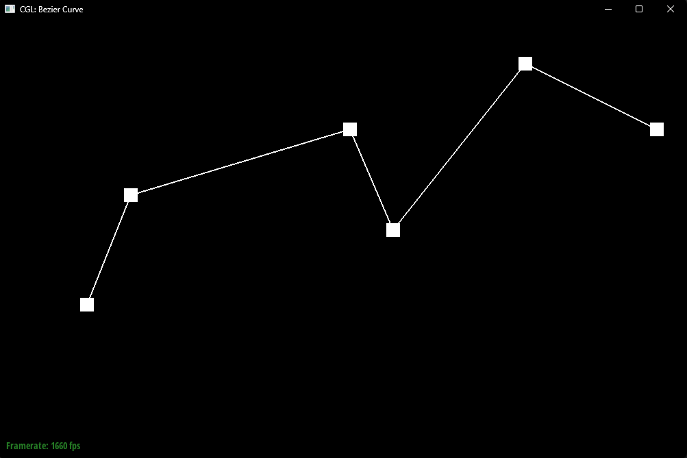
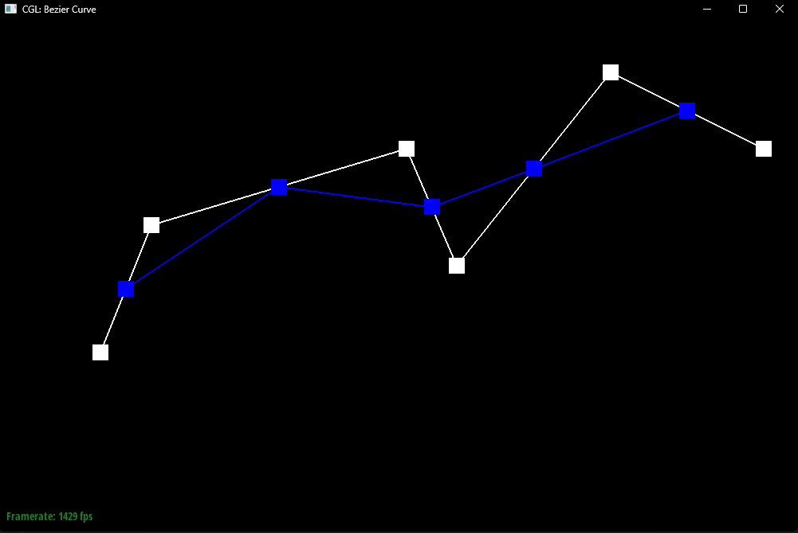
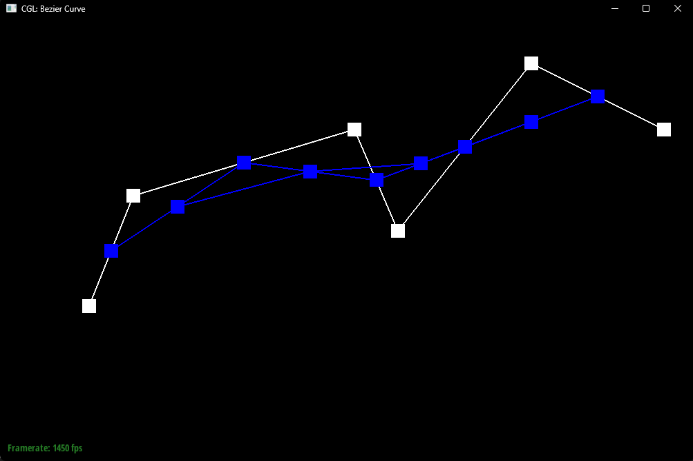
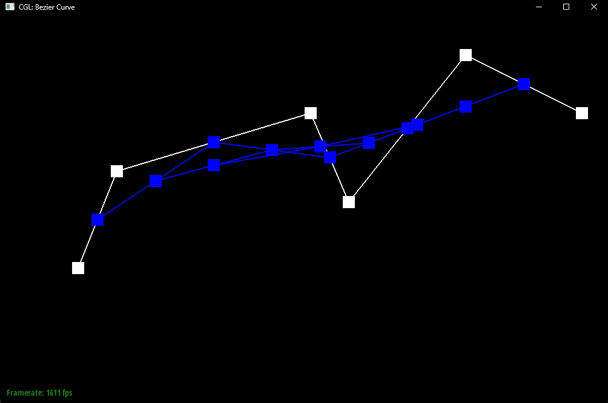
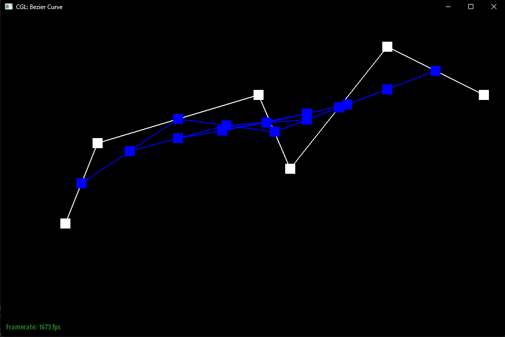
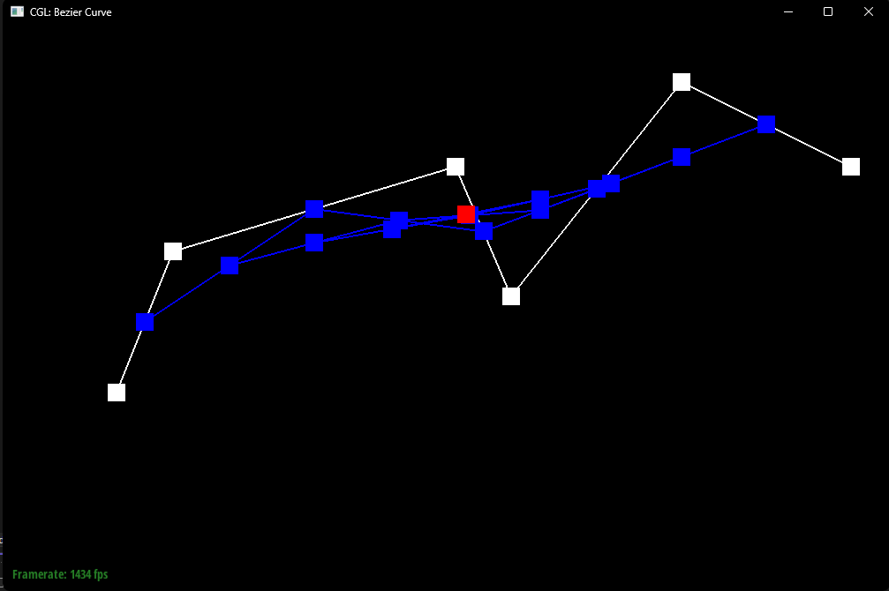
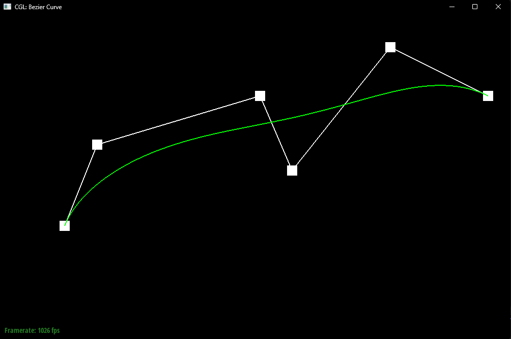
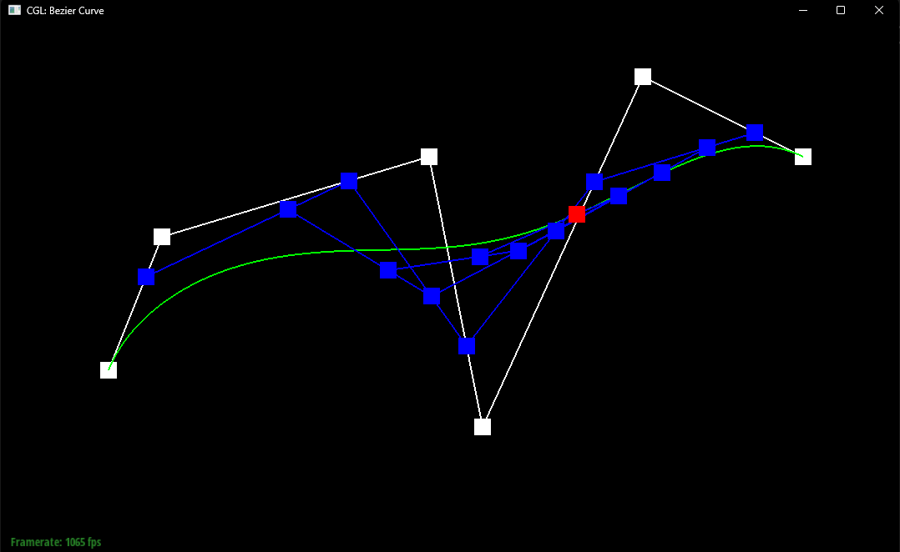
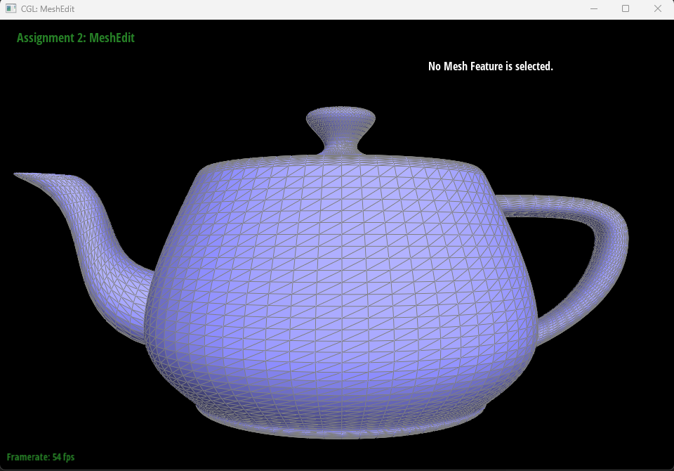

This assignment is organized into two main themes: parametric surfaces (Bézier) and triangle mesh processing.
In Parts 1–2, I implemented evaluation and visualization for Bézier curves/surfaces. The key technique is de Casteljau’s algorithm, which repeatedly performs linear interpolation between adjacent control points to generate lower-level point sets until a single point remains. That final point is the curve value at parameter
𝑡; applying the same idea in two parameter directions evaluates Bézier surfaces. This section helped me connect geometric interpolation with smooth shape generation and practice interactive debugging/visualization.
In Section II (Parts 3–6), I worked with triangle meshes using the half-edge data structure for efficient connectivity traversal and local remeshing. In Part 3, I computed area-weighted vertex normals for Phong shading, producing smoother shading than flat per-face normals. In Parts 4–5, I implemented local remeshing operations (edge flip and edge split), with the main challenge being to correctly reassign half-edge pointers (next/twin/vertex/edge/face) to preserve manifold connectivity. Finally, in Part 6, I implemented Loop subdivision upsampling: I first computed target positions for old vertices and edge-split vertices using the Loop weighting rules, then split all original edges, flipped the appropriate new edges that connect an old vertex and a new vertex, and finally updated vertex positions. This pipeline converts a coarse mesh into a smoother, higher-resolution approximation.
Overall, the assignment ties together geometry (positions/normals) and topology (mesh connectivity): the first half focuses on continuous parametric evaluation, while the second half emphasizes discrete mesh traversal and local topology edits, culminating in a complete subdivision-and-smoothing workflow via Loop subdivision.
de Casteljau’s algorithm evaluates a Bézier curve by repeatedly applying linear interpolation between adjacent control points. Given control points (P_0, P_1, \dots, P_n) and a parameter (t \in [0,1]), one “level” of the algorithm computes a new set of points [ P_i^{(1)} = (1-t)P_i + tP_{i+1}, \quad i = 0,\dots,n-1. ] This reduces the number of points by one. The same interpolation is then applied to the new set, producing (P_i^{(2)}), and the process continues until only a single point remains. That final point is the point on the Bézier curve at parameter (t). Varying (t) traces out a smooth curve that always passes through the first and last control points.
original

step 1

step 2

step 3

step 4

step 5

Finally

different t

To evaluate a Bézier surface patch at parameters ((u,v)), I extend de Casteljau’s algorithm by applying the 1D curve evaluation twice. The control points form a 2D grid (P_{i,j}). First, I treat each row (P_{i,0..n}) as a Bézier curve and run de Casteljau at parameter (u), producing one point (Q_i(u)) per row. These points ({Q_i(u)}) form a new 1D set of control points. Then I run de Casteljau again on ({Q_i(u)}) at parameter (v) to get the final surface point (S(u,v)). In code, `evaluate1D` repeatedly calls `evaluateStep` until one point remains, and `evaluate(u,v)` evaluates each row at (u) and then evaluates the resulting points at (v).

For this task, I modified svg/transforms/robot.svg to make the cubeman look like he is cheering. I kept the original SVG structure and relied on hierarchical transforms by updating only the arm group transforms, while leaving the existing translations and scales unchanged.
Concretely, I rotated the left arm group by rotate(45) and the right arm group by rotate(-45). Because each arm is defined inside its own <g> group, applying a rotation at the group level rotates all polygons of that arm together around the group’s local coordinate frame. This demonstrates hierarchical transforms: the final pose results from composing the arm’s local rotation with its parent transforms (translation/scale) in the scene.
The result is that both arms lift diagonally upward, creating a clear “hands-up celebration” pose while preserving the rest of the robot’s body configuration.
What barycentric coordinates mean.
To interpolate values smoothly across a triangle, I use barycentric coordinates. For any point P inside triangle ABC, there exist weights (α, β, γ) such that:
P = αA + βB + γC, with α + β + γ = 1.
These weights describe how much P is “influenced” by each vertex. Near vertex A, α is large; on the edge BC (opposite A), α becomes 0.
Using barycentric weights to interpolate color.
If the triangle vertices have colors Color(A), Color(B), Color(C), then the color at P is computed by the same weighted combination:
Color(P) = α * Color(A) + β * Color(B) + γ * Color(C).
This produces smooth gradients because the weights vary continuously across the triangle.
How I compute one weight using signed heights (projection onto an edge normal).

To compute beta (the weight for vertex A), I treat the opposite edge BC as a reference line. Let n be any normal vector perpendicular to BC (as shown in my sketch).
I measure “signed height” above the line BC by projecting a vector onto n.
Using B as a common origin, the signed height of point P above line BC is:
h_P = (BP · n) / ||n||
and the signed height of vertex A above the same line BC is:
h_A = (BA · n) / ||n||
Because the factor ||n|| cancels in the ratio, α can be computed as a simple height ratio:
beta = h_P / h_A = (BP · n) / (BA · n)
Important detail: BP and BA must be formed from the same origin (B) so both projections measure height relative to the same reference line BC. This makes the ratio consistent.
Computing the other two weights.
I compute β and γ the same way by choosing the opposite edges CA and AB as reference lines, respectively. In practice, once two weights are known, the third can also be obtained by:
γ = 1 - α - β.

Texture mapping as a sampling problem.
A texture image stores colors over texture space (u, v). During rendering, we must assign a color to each screen sample covered by a triangle (the pixel center, or multiple sub-samples when supersampling is enabled). The key idea is inverse mapping: instead of iterating over texels, we iterate over sample points in screen space and map each sample back into texture space to fetch a texture color.
How I implement texture mapping.
For each screen sample point that lies inside a triangle, I first compute its barycentric weights with respect to the triangle vertices. I then use the same weights to interpolate the texture coordinates:
uv(P) = α * uv0 + β * uv1 + γ * uv2, with α + β + γ = 1.
After obtaining the interpolated (u, v) for that sample point, I fetch a texture color using the selected pixel sampling method (nearest or bilinear) and write the result into the supersample buffer. Importantly, I interpolate UV first and then sample the texture once at that UV location, rather than sampling only at the three vertex UVs.
Nearest-neighbor sampling.
Nearest sampling converts the interpolated (u, v) into texture pixel coordinates and picks the single closest texel. This method is very fast (one texel lookup), but it often produces blocky artifacts and strong aliasing when the texture is magnified or when the texture contains high-frequency detail.
Bilinear sampling.
Bilinear sampling also converts (u, v) into texture pixel coordinates, but instead of choosing one texel, it fetches the four neighboring texels around the coordinate and blends them based on the fractional position inside the texel cell. Compared to nearest, bilinear produces smoother transitions and reduces abrupt “pixel stepping.” It does not fully eliminate aliasing under heavy minification (mipmapping is needed for that), but it typically looks noticeably smoother than nearest for the same UV location.
When the difference is largest.
The gap between nearest and bilinear is most visible when:
• the texture is magnified (zoomed in), so single-texel jumps become obvious, or
• the texture has sharp edges / high-frequency patterns (text, checkerboards, thin lines),
because nearest produces discontinuous changes while bilinear blends neighboring texels continuously.
Relationship with supersampling (1 spp vs 16 spp).
Increasing samples per pixel mainly smooths geometric edges by turning hard coverage decisions into partial coverage averages. Pixel sampling (nearest vs bilinear) mainly affects how the texture itself is reconstructed at a given UV. In my screenshots, bilinear tends to look smoother at both 1 spp and 16 spp, while 16 spp additionally reduces jaggies along triangle boundaries.
Observations from the comparison. In the selected region (chosen using the pixel inspector), bilinear sampling preserves smoother transitions across texture features and avoids the blocky stepping that appears with nearest sampling. With 16 spp, triangle edges are also smoother due to better coverage estimation, but the difference between nearest and bilinear remains visible on the texture itself, especially around sharp texture boundaries and fine patterns.
Nearest & Sample rate: 1x1
Bilinear & Sample rate: 1x1
Nearest & Sample rate: 4x4

Bilinear & Sample rate: 4x4

What level sampling is.
Pixel sampling (nearest vs. bilinear) decides how we reconstruct color within a single mip level.
Level sampling decides which mip level to sample from when the texture is scaled on screen. Mipmaps are a prefiltered pyramid of the texture
(level 0 is full resolution, level 1 is downsampled by 2, etc.). The goal is to reduce aliasing during minification by sampling from a level whose texel footprint better matches a screen pixel’s footprint.
How I estimate the mip level (get_level).
In RasterizerImp::rasterize_textured_triangle, for each screen sample point P = (x, y) inside the triangle, I compute barycentric weights and interpolate:
• uv at P, stored as sp.p_uv
• uv_dx at (x + 1, y), stored as sp.p_dx_uv
• uv_dy at (x, y + 1), stored as sp.p_dy_uv
Inside Texture::get_level, I form finite differences to approximate derivatives:
du/dx, dv/dx from (sp.p_dx_uv - sp.p_uv)
du/dy, dv/dy from (sp.p_dy_uv - sp.p_uv)
I then scale these UV differentials into texel space using the full-resolution texture size (width, height) and compute the footprint magnitude:
Lx = sqrt( (du/dx * width)^2 + (dv/dx * height)^2 )
Ly = sqrt( (du/dy * width)^2 + (dv/dy * height)^2 )
L = max(Lx, Ly)
Finally, the continuous mip level is:
level = log2(L)
and I clamp it to the valid range [0, max_level].
How I sample levels (Texture::sample).
My Texture::sample supports three level sampling modes (controlled by the GUI toggle):
• L_ZERO: always sample from level 0 (no mipmapping), identical to Part 5 behavior.
• L_NEAREST: round the computed continuous level to the nearest integer and sample only that mip level.
• L_LINEAR: sample from the two adjacent mip levels (floor(level) and ceil(level)) and linearly blend them by the fractional part.
After choosing the mip level(s), I apply the selected pixel sampling method:
P_NEAREST uses sample_nearest(uv, level), and
P_LINEAR uses sample_bilinear(uv, level).
Why L_ZERO and L_NEAREST look similar when zooming in.
When the texture is magnified, the estimated footprint L is < 1, so log2(L) becomes negative and the level clamps to 0. In that case, both L_ZERO and L_NEAREST end up sampling level 0, so they appear nearly identical. The differences between level sampling modes become most visible during minification (zooming out) and in high-frequency textures.
Tradeoffs: speed, memory, and antialiasing power.
• Pixel sampling (nearest vs. bilinear): affects local smoothness inside one mip level; bilinear costs more texture fetches but reduces “blocky stepping.”
• Level sampling (mipmaps): greatly reduces minification aliasing; building/storing mipmaps increases memory usage (~33% extra), and L_LINEAR costs extra sampling (two levels).
• Samples per pixel (supersampling): increases cost roughly proportional to sample rate, improves geometric edge antialiasing and helps a bit with texture aliasing, but mipmaps are still the key tool for heavy minification.
Observations from my comparisons.
With a high-frequency png texture, L_ZERO tends to show shimmering/moire patterns when zooming out because it samples only level 0. L_NEAREST reduces aliasing but can introduce “popping” when the chosen mip level changes discretely. L_LINEAR smooths the transition between levels by blending adjacent mipmaps, improving temporal stability during zooming.
P_NEAREST & L_ZERO

P_LINEAR & L_ZERO

P_NEAREST & L_NEAREST

P_LINEAR & L_NEAREST